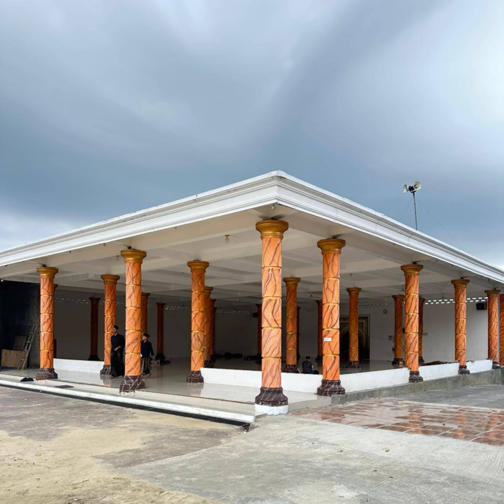

Program hafalan Al-Qur'an dengan metode tasmi' dan murajaah.
Pengajian kitab-kitab salaf dengan metode sorogan untuk pemahaman mendalam.
Kegiatan olahraga, seni, dan keterampilan untuk mengembangkan bakat dan minat santri.
Mencetak para santri sebagai kader ahlus sunnah wal jama'ah an Nahdliyah yang teguh dalam prinsip ilmiyah-amaliyah dan amaliyah-ilmiyah serta berakhlaqul karimah.
Menjadikan Al Falah sebagai rujukan pengembangan keilmuan keislaman dan da'wah multi kultural.


| Waktu | Kegiatan |
|---|---|
| 03.30 - 04.00 | Mujahadah |
| 04.00 - 04.30 | Pembacaan Surah Al Waqiah |
| 04.30 - 05.00 | Persiapan Jamaah Subuh & Jamaah Subuh |
| 05.30 - 06.00 | Pengajian Al Qur'an |
| 06.00 - 07.30 | Pengajian Kitab Tafsir |
| 07.30 - 12.00 | Kegiatan Sekolah Formal |
| 12.00 - 12.30 | Persiapan Sholat Duhur Berjamaah & Sholat Duhur berjamaah |
| 12.30 - 14.30 | Syawir |
| 14.30 - 15.00 | Istirahat |
| 15.00 - 16.30 | Persiapan Sholat Ashar Berjamaah & Sholat Berjamaah |
| 16.30 - 17.00 | Pengajian Kitab Ta`lim Muta'allim |
| 17.00 - 18.00 | Persiapan sholat & Sholat Magrib Berjamaah |
| 18.00 - 19.00 | Pembacaan Surah Yasin, Ar Rahman, Al Waqiah, & Al Mulk Bersama-sama |
| 19.00 - 19.30 | Persiapan Sholat Isya Berjamaah & Sholat Isya Berjamaah |
| 20.00 - 22.00 | Kegiatan Sekolah Madrasah |
| 22.00 - 03.30 | Istirahat |


Pondok Pesantren Al Falah melaksanakan pendidikan keagamaan melalui Madrasah Islamiyah Salafiyah Riyadlotul 'Uqul (MISRIU).
Ditempuh selama 3 tahun dengan fokus utama pada pembinaan akhlaq (moralitas & mentalitas) serta pengembangan wawasan sosial dasar.
Jenjang pendalaman selama 4 tahun yang menekankan penguasaan literatur klasik dan ilmu alat tingkat lanjut.
Ingin mempelajari lebih dalam mengenai visi pendidikan, struktur kurikulum lengkap, dan sistem pengajaran di Madrasah Diniyah MISRIU?
Selengkapnya tentang MISRIU


Informasi lengkap mengenai rincian biaya administrasi awal masuk santri baru, biaya bulanan, serta kebutuhan pendaftaran putra dan putri Pondok Pesantren Al-Falah.
Lihat Rincian Biaya Administrasi